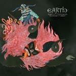
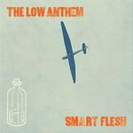

Music Reviews
-
The Vaccines What Did You Expect From The Vaccines?
It’s about seven months since the blogosphere misplaced its excrement whilst trying to scream this particular band name into the face of every man, woman and child. Such wrongs must be righted, so let’s go and nick the wheels off the hypemobile – so to speak.
Joe Iliff doesn't mind self-referential titles... -
The Naked and Famous Passive Me, Aggressive You
New Zealanders show plenty of promise of their debut album.
Vanessa Bennett reviews... -
Parts & Labor Constant Future
More of the same from Parts & Labor, but the overall quality of Constant Future proves that's not always a bad thing.
Joel Stanier reviews... -

Earth Angels Of Darkness, Demons Of Light: 1
Drone metal band, Earth, finds its foothold in America’s heritage and comes up with an anti-classic album.
Sean Caldwell reviews... -

Dirty Beaches Badlands
One-man band with a strong liking to American rockabilly creates an ominous landscape of beauty and filth, all while giving the chillwave tag a brand new connotation.
Juan Edgardo Rodríguez feels very cool... -
Young Prisms Friends For Now
Young Prisms debut full length is an enthusiastic noise pop record and a fine example of lo-fi excellence.
Andrew Baer reviews... -
Elbow Build A Rocket Boys!
After The Seldom Seen Kid, on the metaphorical morning after the night before, Elbow have returned with the figurative wake-up coffee of Build A Rocket Boys! And, though it doesn’t look quite so seductive in the cold morning light, there’s still much to encourage even their most casual acquaintance to stay, if just a little longer.
Joe Iliff reviews... -

The Low Anthem Smart Flesh
The Low Anthem have settled on a certain sound with Smart Flesh, but that turns out to be their downfall.
Joel Stanier reviews... -
Joan As Police Woman The Deep Field
Joan Wasser's third album may well be her finest yet.
Sam Redlark reviews... -

Lupe Fiasco Lasers
It's hard to escape the sound of compromise on Lupe Fiasco's third full-length.
Genice Phillips reviews...